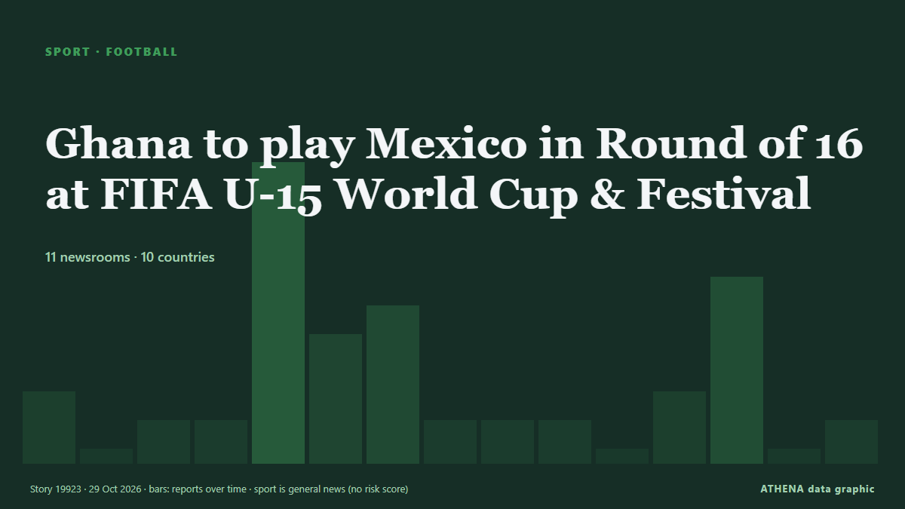

Ghana to play Mexico in Round of 16 at FIFA U-15 World Cup & Festival

The National U-15 Boys team will face Mexico in the Round of 16 of the FIFA U-15 World Cup and Festival in Azerbaijan. von MyJoyOnline
Unabhängig gemeldet von 10 Medien in 9 Ländern seit dem 22. Okt., zuerst von MyJoyOnline; die Berichterstattung ist abgeklungen. Sport und Kultur werden ohne Risikobewertung abgelegt. Die Konfidenz liegt bei 89 % (hoch): 10 Medien bestätigen es unabhängig, bei einer mittleren Verlässlichkeit der Quellen von 72 %. Medien nach Land: Aserbaidschan (15), Ghana (5), Belarus (2). Berichterstattung: 22. Okt. bis 29. Okt., 169 Stunden.
Was sich geändert hat: 7 neue Berichte von 6 Redaktionen in den 24 Stunden bis 29. Okt..
Erste Schlagzeile: President Ilham Aliyev watches opening ceremony of FIFA U-15 World Cup and Festival
Schlagzeilen werden auf Englisch angezeigt, wie veröffentlicht.
Auf einen Blick
Ausgewählt, bewertet und geschrieben nach der veröffentlichten Methodik von ATHENA. Kein Redakteur greift in einzelne Ereignisse ein. So entsteht ATHENA ›
| 22 Oct 08:29 UTC | 2 |
|---|---|
| 22 Oct 20:29 UTC | 0 |
| 23 Oct 08:29 UTC | 1 |
| 23 Oct 20:29 UTC | 1 |
| 24 Oct 08:29 UTC | 10 |
| 24 Oct 20:29 UTC | 4 |
| 25 Oct 08:29 UTC | 5 |
| 25 Oct 20:29 UTC | 0 |
| 26 Oct 08:29 UTC | 1 |
| 26 Oct 20:29 UTC | 1 |
| 27 Oct 08:29 UTC | 0 |
| 27 Oct 20:29 UTC | 1 |
| 28 Oct 08:29 UTC | 6 |
| 28 Oct 20:29 UTC | 0 |
| 29 Oct 08:29 UTC | 1 |
Warum diese Zahlen
Bedeutung
Risiko
Konfidenz
Die Berichterstattung – wer berichtete, und wann
Schlagzeile wie veröffentlicht · öffnet das Original- MyJoyOnline · GhanaGhana’s U-15 Boys depart Accra for Azerbaijan ahead of FIFA U-15 World Cup and Festival
- MyJoyOnline · Ghana4EVAYUNG FC Youngster Emmanuel Afful earns Ghana U-15 call-up for World Cup in Azerbaijan
- AzerNews · AserbaidschanBaku prepares to host FIFA U-15 World Cup and Festival
- AzerNews · AserbaidschanBaku hosts inaugural FIFA U-15 World Championship and Festival
- AzerNews · AserbaidschanFIFA President Gianni Infantino visits Baku venue for inaugural U-15 World Cup and Festival
- APA (English) · AserbaidschanPresident Ilham Aliyev watched opening ceremony of FIFA U-15 World Cup and Festival-UPDATED-1-PHOTO
- AzerNews · AserbaidschanPresident Ilham Aliyev watches opening ceremony of FIFA U-15 World Cup and Festival
- APA (English) · AserbaidschanFIFA U-15 World Cup and Festival 2026 opening ceremony held in Baku-UPDATED
- APA (English) · AserbaidschanAzerbaijan U-15 national football team makes flying start at World Cup in Baku
- MyJoyOnline · GhanaGhana’s U-15 Boys thrash Uzbekistan 4-1 as Abdul Aziz Issah and Jerry Owusu hit brace each
- APA (English) · AserbaidschanFootage of opening ceremony of inaugural FIFA U-15 World Cup and Festival posted on President Ilham Aliyev's social media
- AzerNews · AserbaidschanPresident Ilham Aliyev’s social media accounts share video on FIFA U-15 World Cup and Festival
- APA (English) · AserbaidschanAzerbaijan national team will play its next 2 matches today
- AzerNews · AserbaidschanAzerbaijan to play two matches at U-15 World Cup today
- AzerNews · AserbaidschanGianni Infantino thanks President Ilham Aliyev for organization of FIFA U-15 World Cup
- BelTA (English) — page reader · Belarus12:35 Belarus lose to Mali at FIFA U-15 World Cup & Festival in Azerbaijan Sport
- APA (English) · AserbaidschanU-15 World Cup: Azerbaijan claims another victory
- AzerNews · AserbaidschanAzerbaijan secure second straight Victory at FIFA U-15 World Cup
- APA (English) · AserbaidschanU-15 World Championship: Azerbaijani national team loses to Australia
- Eye Radio · SüdsudanSouth Sudan U-15 record three wins and a draw at FIFA football festival in Azerbaijan
- FrontPage Africa · LiberiaLiberia U-15 Secure Historic Victory Over Philippines as Infantino Hails Young Lone Stars
- Barbados Today · BarbadosKing: FIFA U-15 World Cup an eye-opening experience
- Times of Eswatini · EswatiniAnother U-15 FIFA World Cup win for Eswatini
- BelTA (English) — page reader · Belarus12:52 Belarus secure fourth victory at FIFA U-15 World Cup & Festival 2026 in Azerbaijan Sport
- Gulf News · Vereinigte Arabische EmirateGianni Infantino visits UAE's youth squad during FIFA U-15 World Cup and Festival 2026
- MyJoyOnline · GhanaGhana to play Mexico in Round of 16 at FIFA U-15 World Cup & Festival
- MyJoyOnline · GhanaGhana thrash Mexico 5-2 to advance to quarter-finals of FIFA U-15 World Cup & Festival
- Barbados Today · BarbadosJunior Tridents record historic World Cup win
- Amu TV · AfghanistanAfghanistan U-15 team beats India 2-1 at FIFA tournament in Azerbaijan